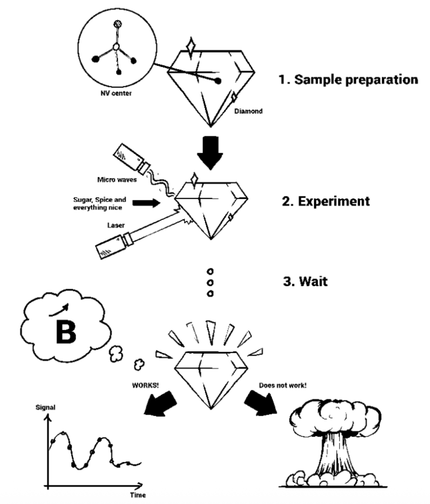

How to think about diamonds, differently.
A different perspective
Most of us think about diamonds as a precious gem — hard, with a high refractive index and perhaps a good investment [the EU thinks so as well; hence, our research grants]. Today, diamonds find a variety of uses: in the cutting industry, bijouterie, and as radiation and heat shields in modern space probes. A rather unrelated use can be found in modern quantum optics labs — this is how we think of diamonds — as the host material for one of the most precise and responsive quantum sensors. Speaking of quantum sensors, these devices make use of the bizarre quantum properties of small atom-scale particles for sensing purposes.
Diamond has impurities [a carbon atom replaced with a non-carbon atom] and vacancies [missing carbon atoms]. These vacancies often act as a trap for electrons, and these electrons have extraordinary sensitivity towards external changes in magnetic and electric fields and temperature. To put this into practice we need to address individual vacancies in diamond, or sometimes a bunch of them. There are sophisticated techniques to artificially grow diamonds with suitable properties and sizes [preferably small], but the very first nanodiamonds — one millionth of a millimeter in size — were obtained with brute force: natural diamonds placed with explosives in a closed chamber, producing very fine diamond particles known as detonation nanodiamonds.
Diamonds in the lab
Back in the lab, quantum physicists use diamonds and their defects for sensing different physical parameters — primarily magnetic fields at an unprecedentedly small scale. Lasers bring the electrons in the vacancies into a specific state [we choose to call it the “ground state”] and microwaves manipulate the state of these electrons in order to quantify and control external perturbations by their effect on the electron's state. Loosely speaking, electrons here play the role of a small compass that responds to changes in external fields. Rather complicated nuclear magnetic resonance techniques are employed for a diverse range of measurements using this small compass. Single defect centers, in addition, offer high spatial resolution — a very useful property for nanoscale imaging. In its beauty, this diamond-based technology relies on complex material fabrication, advanced electronics, lasers, and multi-step experiments; if everything goes well, we see the desired signal in the light photons coming from the diamond, more often than not.

Going a step further
To enhance the efficiency and sensitivity of these small sensors even further, “optimized” microwave pulses are used to play with the electron in the defect centers. This is where quantum optimal control appears. Plenty of optimization algorithms come in handy here — and it is a fad to give them unusual names: there is GRAPE, CRAB, and GOAT [and it is not Lionel Messi or Cristiano Ronaldo, for a change]. Technically, these algorithms converge to an extremum — the maximum or minimum of a desired quantity such as the best possible sensitivity or the most efficient state transfer. These search algorithms are like trying to climb up or down a hill [the control landscape] while blindfolded — following the steepest slope, for instance, is what we technically call gradient search. The product of such an optimization is a microwave pulse with rather peculiar shapes that make the electron go jolly. Implementing optimized pulses results in enhanced sensitivity and improved robustness against experimental imperfections — too little power, slightly wrong driving frequencies, imperfect devices: optimized pulses tidy things up for us. Although this may not be the most aesthetic use of diamonds, the prospect of being the next-generation quantum sensor makes diamonds even more precious.